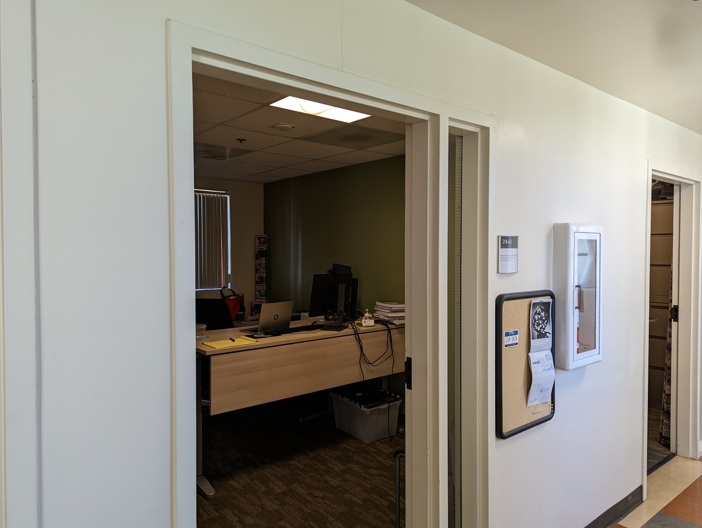

install.packages('csucistats',
repos = c('https://inqs909.r-universe.dev',
'https://cloud.r-project.org'))Welcome to Math 408
Advance Data Analysis
Introductions
San Bernardino, CA
CSU Monterey Bay
- BS Biology
San Diego State University
- Master’s in Public Health
UC Riverside
- PhD in Applied Statistics
Introductions
Name
Year
Major
Fun Fact
Career Goal
Goals for the Course
Gain R Programming Skills
Apply different modeling techniques
Linear Regression
Model Building
Apply Different Machine Learning Techniques
OH: Traditional
- BTE 2840 MW 3-4 PM
- BTE 2840 T 10 AM -12 PM

Syllabus
Syllabus
Books
- Introduction to Statistical Learning (SL)
- James, Witten, Hastie, Tibshirani
- Available to Download from the Broome Library
- Statistical Computing (SC)
- Isaac Quintanilla Salinas
- https://www.inqs.info/stat_comp/
- https://hypothes.is/groups/xMmDdj2A/m408
Introduction to R
R Programming
R is a statistical programming package that allows you to conduct different types of analysis.
RStudio
A piece of software that organizes how you conduct statistical analysis in R.
Posit Cloud
A web version of RStudio.
R Packages
Tidyverse
csucistats
R as a calculator
R can evaluate different expressions in the console tab.
Types of Data
Numeric
Character
Logical
Missing
R Functions
R functions performs tasks to specific data values.